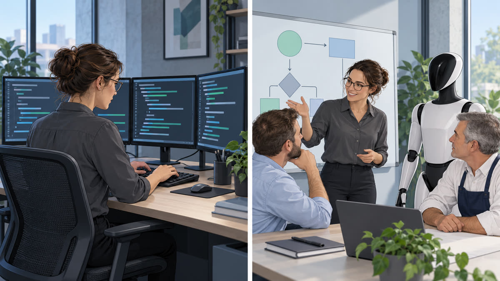

This is a free guide for anyone who wants to put AI agents to work in a company. The central idea: the manager already knows the processes, customers, suppliers, and team—that is the hardest part—and only needs to learn how to pass that knowledge to the agent. That is what the 5-4-3 rule is for: five questions, four levels of autonomy, and three test cases. The guide also shows how an IT professional's role changes, from builder to mentor, auditor, trainer, and consultant. It includes ready-to-copy templates and requires no programming.
The team
Three roles, one team
The agent works fast. What it lacks is business context and someone to check its work. That is where the manager and IT professional come in.
🧭 The manager says what and why
Knows the process, customer, supplier, and team. Clearly passes that knowledge to the agent.
🛠️ The IT professional ensures how
Turns the request into instructions, tests them, looks for risks, and proves they work.
🤖 The agent executes
Works at the agreed autonomy level and calls a person when something falls outside the plan.
The manager
You already know the hardest part
Think about what you carry in your head: how each process works, what customers complain about, which supplier is late, who on the team handles what. No AI model knows this. That knowledge is yours.
The agent has the capability, but not the context. No one outside the business can provide that context better than you. You do not need to learn programming. You need to learn how to talk to the agent, just as you already talk to a new employee.
What only you know
⚙️Processeshow each thing is done and why
🙋Customerswhat they ask for and complain about
🚚Supplierswho delivers and who is late
👥Teamwho handles what
5-4-3 Rule
Five questions, four levels, three cases
An easy way to remember how to pass your business knowledge to the agent. Copy-ready templates are in the kit.
5questions
Onboard the agent like a new employee
Before assigning any task, write down the same answers you would give someone starting today. Then replace the word person with agent: it is the same list.
What is the goal of the task?
What context and information are needed?
Which tools can be used?
What can be done independently, and what needs your approval?
How will you know if the result is good?
4levels
Decide how much it can do on its own
Assign a level to each action. The greater the impact of an action, the more you should be involved.
0 · hands off — forwards it to a person (e.g., cancel a contract)
1 · proposes — prepares it and waits for your approval (e.g., a refund)
2 · does and tells — carries it out and notifies the person responsible (e.g., reschedule an appointment)
3 · does it alone — carries it out and records it (e.g., answer a frequently asked question)
3cases
Test before you trust
Before putting the agent to work, run three cases. If it gets all three right, it can start. If it gets one wrong, adjust the brief and test again.
Routine: an everyday case
Difficult: a case that calls for judgment
Exception: something that almost never happens
The IT professional
From builder to mentor

IT professionals spent years building systems. Today, agents build fast. The value of the IT professional shifts: they stop being the builder and become the person who trains, checks, and guides.
🤝 Mentor
Sits with the manager and helps turn the process into instructions, from the first draft through validation.
Uses: 5-question brief
🔎 Auditor
Tests, looks for risks, and shows the evidence. Delivers a short report with what to do now, in 7 days, and in 30 days.
Uses: 3-case rehearsal and report
🎓 Trainer
Prepares the team and agents using real company cases until each can get them right without help.
Uses: the 3 cases as an exercise
🗺️ Consultant
Maps the processes and decides where the agent fits—and where AI is not needed.
The owner wants an agent to reply to orders on WhatsApp.
The owner answers the 5 questionsGoal: record orders. Context: menu, prices, oven schedule. Approval: discounts and large orders.
Sets the levelsAnswer menu questions: 3. Confirm an order: 2. Give a discount: 1. Cancel an order already paid for: 0.
The IT professional, as mentor, writes the instructionsCombines the answers in a brief that the agent reads every time.
The IT professional, as auditor, tests the 3 casesRoutine: 20 loaves for tomorrow. Difficult: a discount on a large order. Exception: a cake needed in an hour.
The agent startsEach action has a defined level, and a person is called whenever something falls outside the plan.
Kit
Copy and use
Five ready-to-use templates. The first two are for the manager; the other three are for the IT professional.
Manager
Agent brief (5 questions)
Answer these and paste them at the start of your conversation with the agent.
# Agent brief: <task name>
(Replace the word person with agent: these are the questions for a new employee.)
1. What is the goal of the task?
2. What context and information are needed?
3. Which tools can be used?
4. What can be done independently, and what needs my approval?
5. How will I know if the result is good?
Rule: if information is missing, do not assume. Stop and ask me.
Manager
Autonomy table (4 levels)
One row per action. If in doubt, choose the lowest level.
| Action | Level | Meaning |
|---|---|---|
| Answer a frequently asked question | 3 · does it alone | carries it out and records it |
| Reschedule an appointment | 2 · does and tells | carries it out and notifies the person responsible |
| Refund | 1 · proposes | prepares it and waits for approval |
| Cancel a contract | 0 · hands off | forwards it to a person |
The greater the impact of the action, the more a person should be involved.
IT professional · auditor
3-case rehearsal
Paste this into the agent along with the brief. Use fictional data only.
I will paste a brief for an agent at my company. Play the role of that agent in a rehearsal.
For each case, say what you would do, at what autonomy level, and which part of the brief you based it on.
If information is missing, DO NOT assume: stop and say what is missing from the brief.
Case 1 (routine): <an everyday case>
Case 2 (difficult): <a case that calls for judgment>
Case 3 (exception): <something that almost never happens>
[paste the brief here]
IT professional · consultant
Six-link map
Fill this out with the manager for each process before deciding where the agent fits.
Process: <name>
1. Input: what arrives and where it comes from
2. Decisions: one per line; mark R (rule) or J (judgment)
3. Actions: what gets done
4. Checks: how it is verified
5. Exceptions: what falls outside the norm and who decides
6. Outcome: what comes out and who receives it
Tip: write from the end to the beginning. Every exception ends with a person.
IT professional · auditor
One-page report
Give this to the manager after testing the agents.
1. One-page summary
2. Inventory: which agents, what they do, and who is responsible for them
3. Risks, impacts, and evidence
4. Recommendations: now / 7 days / 30 days
5. Limitations: what was not tested
6. Follow-up proposal (optional)